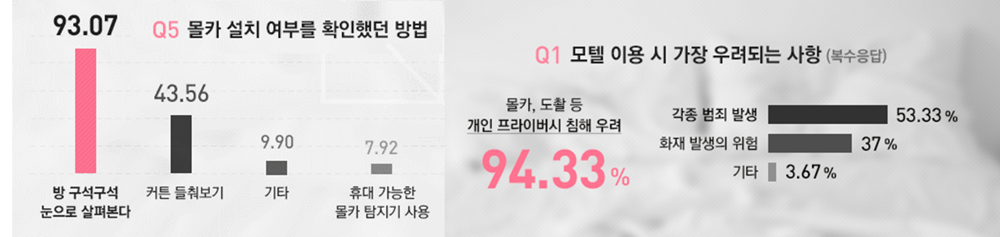

더 이상 불안해하지 마세요볼래카메라가 몰래카메라를 찾아드립니다. |
많은 사람들이 불안해합니다 |
|  |
| 야놀자 설문조사 결과 (2015) |
|
많은 사람들이 몰래카메라가 있지 않은지에 대해 불안해합니다. |
|
볼래카메라는 이런 점에서 유용합니다 |
||
|---|---|---|
|
기존의 육안으로 판별하는 방식과 다르게 어플리케이션을 이용해 탐지하는 방식 |
10-30만원에 달하는 탐지기 가격에 비해 비교적 저렴한 가격 |
몰래카메라가 발생한 지역의 위치를 사용자들과 공유할 수 있습니다. |